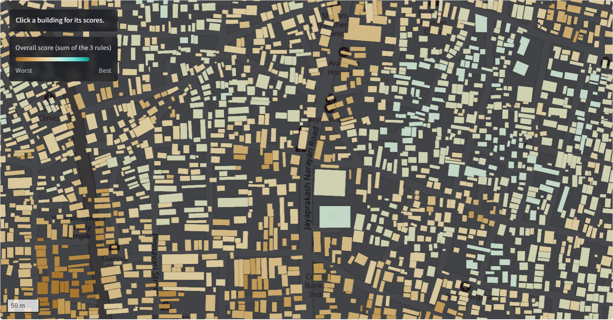

3-30-300
Picture: per-building 3-30-300 score over Warangal — from worst (amber) to best (teal). Zoom in and click any building for its three rule scores.
The 3-30-300 rule says everyone should see at least 3 trees from their home, live in a neighbourhood with 30% tree canopy, and be within 300 m of a park. We score every single building in a city against all three rules — so you see not an average, but exactly which streets and homes are left out.
Strengths & innovation
- Every building scoredEvery single building in the city gets its own score.
- Trees, canopy and parksRule 3 counts nearby trees, Rule 30 the surrounding canopy, Rule 300 the distance to a park.
- Overall and per-rule viewSee one overall score or each rule separately, to find where the shortfall comes from.
- Globally applicableBuilt on open data, so it can be run for any city in the world.
“Access to green is not one distance to one park. 3-30-300 measures it at three scales — the trees you see from your window, the canopy around your neighbourhood and the park within walking distance.”
Demo
Real results for Warangal, India (174,395 buildings). Choose the overall score or one of the three rules, zoom from city to street, and click any building to see its trees, canopy cover and distance to the nearest park.
Loading demo data…
Request a study
Every city has its own data and questions, so each 3-30-300 study is scoped to your project. Tell us which city or area you want assessed — we come back with a proposal.
- ScopeShare your city or area and how you want to use the scores (screening, planning, reporting).
- ScoreWe rate every building on trees, canopy cover and distance to parks.
- DeliverAn interactive map plus building-level data you can use in your own tools.